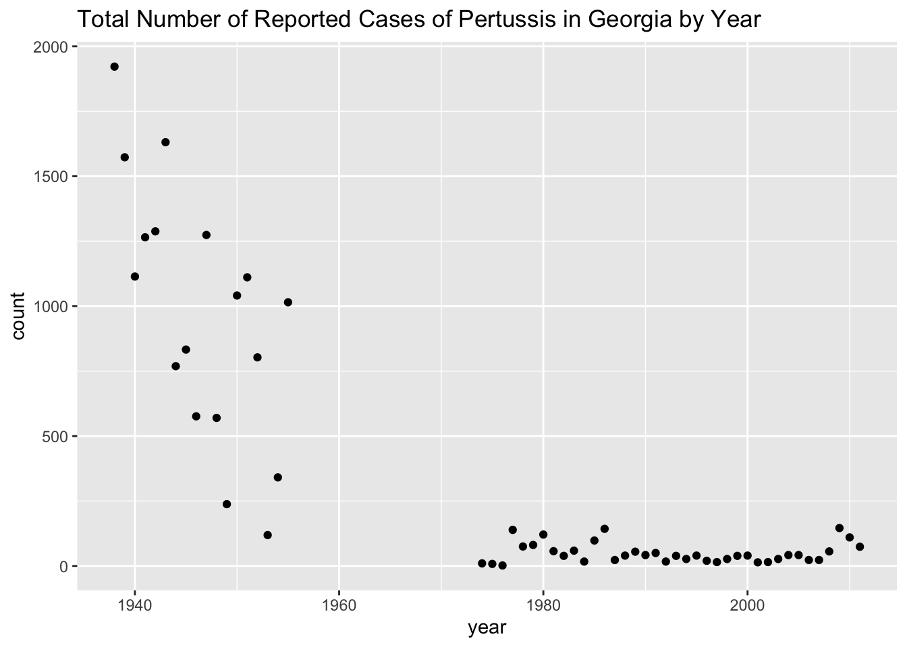
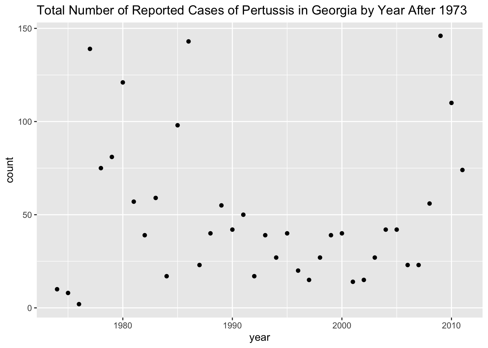
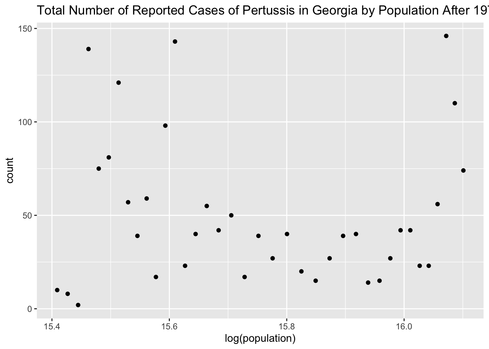

plot(log10(population_lifeexpec2000Spopulation), infmortality_lifeexpec2000$life_expectancy,
main = "Life Expectancy vs. Population",
xlab = "Population (logscale)",
ylab = "Life Expectancy",
sub = "Year 2000")
simple model fits
fits model with infant mortality as predictor pulling data from africadata_y2000
fit1 <- lm(life_expectancy ~ infant_mortality, data = africadata_y2000)
fits model with population size as predictor pulling data from africadata_y2000
fit2 <- lm(life_expectancy ~ population, data = africadata_y2000)
summary(fit1) - outputs stats summary for fit 1
summary(fit2) - outputs stats summary for fit 2
summary(fit1)
summary(fit2)
based on the p-values for each fit, fit 1 is a better model for the data.
This section is contributed by Ranni Tewfik.
This exercise uses the “us_contagious_diseases” dataset from the “dslabs” package. The dataset provides information on contagious diseases in the U.S. by state, year, and disease. There are six variables in the dataset: disease, state, year, weeks reporting, count, and population.
Part 1 - Loading and Checking Data
#Load the required packageslibrary(dslabs)library(dplyr)
Attaching package: 'dplyr'
The following objects are masked from 'package:stats':
filter, lag
The following objects are masked from 'package:base':
intersect, setdiff, setequal, union
library(ggplot2)#Look at help file for "us_contagious_diseases"help(us_contagious_diseases)#Get an overview of data structurestr(us_contagious_diseases)
#Get a summary of datasummary(us_contagious_diseases)
disease state year weeks_reporting
Hepatitis A:2346 Alabama : 315 Min. :1928 Min. : 0.00
Measles :3825 Alaska : 315 1st Qu.:1950 1st Qu.:31.00
Mumps :1785 Arizona : 315 Median :1975 Median :46.00
Pertussis :2856 Arkansas : 315 Mean :1971 Mean :37.38
Polio :2091 California: 315 3rd Qu.:1990 3rd Qu.:50.00
Rubella :1887 Colorado : 315 Max. :2011 Max. :52.00
Smallpox :1275 (Other) :14175
count population
Min. : 0 Min. : 86853
1st Qu.: 7 1st Qu.: 1018755
Median : 69 Median : 2749249
Mean : 1492 Mean : 4107584
3rd Qu.: 525 3rd Qu.: 4996229
Max. :132342 Max. :37607525
NA's :214
#Determine the type of object "us_contagious_diseases" isclass(us_contagious_diseases)
[1] "data.frame"
Part 2 - Processing Data
#Assign only Pertussis and Georgia in "us_contagious_diseases" to a new objectgeorgia <-subset(us_contagious_diseases, disease =="Pertussis"& state =="Georgia")#Get an overview of data structure and data summary for "georgia"str(georgia)
disease state year weeks_reporting
Hepatitis A: 0 Georgia :56 Min. :1938 Min. : 2.00
Measles : 0 Alabama : 0 1st Qu.:1952 1st Qu.:39.00
Mumps : 0 Alaska : 0 Median :1984 Median :46.50
Pertussis :56 Arizona : 0 Mean :1978 Mean :41.75
Polio : 0 Arkansas : 0 3rd Qu.:1997 3rd Qu.:49.25
Rubella : 0 California: 0 Max. :2011 Max. :52.00
Smallpox : 0 (Other) : 0
count population
Min. : 2.0 Min. :3066678
1st Qu.: 27.0 1st Qu.:3518196
Median : 58.0 Median :5776280
Mean : 346.0 Mean :5898795
3rd Qu.: 571.5 3rd Qu.:7688876
Max. :1922.0 Max. :9830160
#Create a new object that only contains year and countgeorgia1 <- georgia %>%select("year", "count")#Create a new object that only contains population and countgeorgia2 <- georgia %>%select("population", "count")#Get an overview of data structure and data summary for "georgia1" and "georgia2"str(georgia1)
'data.frame': 56 obs. of 2 variables:
$ year : num 1938 1939 1940 1941 1942 ...
$ count: num 1922 1573 1114 1265 1288 ...
summary(georgia1)
year count
Min. :1938 Min. : 2.0
1st Qu.:1952 1st Qu.: 27.0
Median :1984 Median : 58.0
Mean :1978 Mean : 346.0
3rd Qu.:1997 3rd Qu.: 571.5
Max. :2011 Max. :1922.0
str(georgia2)
'data.frame': 56 obs. of 2 variables:
$ population: num 3066678 3095013 3123723 3152430 3181234 ...
$ count : num 1922 1573 1114 1265 1288 ...
summary(georgia2)
population count
Min. :3066678 Min. : 2.0
1st Qu.:3518196 1st Qu.: 27.0
Median :5776280 Median : 58.0
Mean :5898795 Mean : 346.0
3rd Qu.:7688876 3rd Qu.: 571.5
Max. :9830160 Max. :1922.0
Part 3 - Plotting
#Plot count as a function of yearggplot(georgia1, aes(x = year, y = count)) +geom_point() +ggtitle("Total Number of Reported Cases of Pertussis in Georgia by Year")

There is a negative correlation between year and count to a certain point in the plot, and then there is a break in the data (no available data for 1956-1973). After that point, there seems to be no correlation between year and count.
#Plot count as a function of populationggplot(georgia2, aes(x =log(population), y = count)) +geom_point() +ggtitle("Total Number of Reported Cases of Pertussis in Georgia by Population")
Similar to the previous plot, there is a negative correlation between population and count to a certain point. However, there is a noticeable break in the data, and there seems to be no correlation between population and count after that point. This is because no data is available for the years 1956-1973.
Part 4 - More Data Processing
#Create a new object by extracting only the data for the years after 1973 from "georgia"georgia3 <- georgia[(georgia$year >=1974),]#Get an overview of data structure and data summary for "africadata3"str(georgia3)
disease state year weeks_reporting
Hepatitis A: 0 Georgia :38 Min. :1974 Min. : 2.00
Measles : 0 Alabama : 0 1st Qu.:1983 1st Qu.:34.75
Mumps : 0 Alaska : 0 Median :1992 Median :42.50
Pertussis :38 Arizona : 0 Mean :1992 Mean :38.45
Polio : 0 Arkansas : 0 3rd Qu.:2002 3rd Qu.:47.75
Rubella : 0 California: 0 Max. :2011 Max. :51.00
Smallpox : 0 (Other) : 0
count population
Min. : 2.00 Min. :4920562
1st Qu.: 23.00 1st Qu.:5753480
Median : 40.00 Median :6852235
Mean : 49.87 Mean :7111873
3rd Qu.: 58.50 3rd Qu.:8480435
Max. :146.00 Max. :9830160
Part 5 - More Plotting
#Plot count as a function of year for the years after 1973ggplot(georgia3, aes(x = year, y = count)) +geom_point() +ggtitle("Total Number of Reported Cases of Pertussis in Georgia by Year After 1973")

There is no noticeable correlation between year and count after 1973.
#Plot count as a function of population for the years after 1973ggplot(georgia3, aes(x =log(population), y = count)) +geom_point() +ggtitle("Total Number of Reported Cases of Pertussis in Georgia by Population After 1973")

There is no noticeable correlation between population and count after 1973.
Part 6 - Simple Model Fits
#Fit count as the outcome and year as the predictorfit1 <-glm(count ~ year, data = georgia3, family =poisson(link ="log"))summary(fit1)
Call:
glm(formula = count ~ year, family = poisson(link = "log"), data = georgia3)
Coefficients:
Estimate Std. Error z value Pr(>|z|)
(Intercept) 8.810681 4.174343 2.111 0.0348 *
year -0.002460 0.002095 -1.174 0.2404
---
Signif. codes: 0 '***' 0.001 '**' 0.01 '*' 0.05 '.' 0.1 ' ' 1
(Dispersion parameter for poisson family taken to be 1)
Null deviance: 1026.6 on 37 degrees of freedom
Residual deviance: 1025.3 on 36 degrees of freedom
AIC: 1235.8
Number of Fisher Scoring iterations: 5
After 1973, count is not significantly associated with year (p-value = 0.24).
#Fit count as the outcome and population as the predictorfit2 <-glm(count ~ population, data = georgia3, family =poisson(link ="log"))summary(fit2)
Call:
glm(formula = count ~ population, family = poisson(link = "log"),
data = georgia3)
Coefficients:
Estimate Std. Error z value Pr(>|z|)
(Intercept) 4.007e+00 1.089e-01 36.801 <2e-16 ***
population -1.370e-08 1.503e-08 -0.912 0.362
---
Signif. codes: 0 '***' 0.001 '**' 0.01 '*' 0.05 '.' 0.1 ' ' 1
(Dispersion parameter for poisson family taken to be 1)
Null deviance: 1026.6 on 37 degrees of freedom
Residual deviance: 1025.8 on 36 degrees of freedom
AIC: 1236.3
Number of Fisher Scoring iterations: 5
After 1973, count is not significantly associated with population (p-value = 0.36).